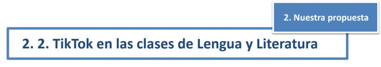
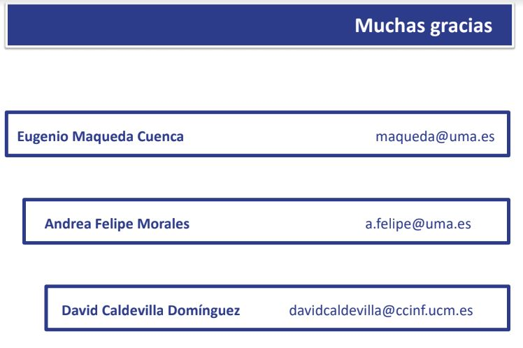

TIKTOK COMO HERRAMIENTA
INNOVADORA EN EL AULA. APLICACIONES EN EL ÁREA DE DLL
Eugenio Maqueda Cuenca*, Andrea Felipe Morales*
y David Caldevilla Domínguez**
*Universidad de Málaga y **Universidad Complutense de Madrid
- Introducción
- Nuestra propuesta
2.1Nociones básicas de TikTok
2.2TikTok en las clases de Lengua y Literatura
- Conclusiónes
Bibliografía
- Las nuevas tecnologías han conseguido democratizar la elaboración y
difusción de contenidos.
- Los jóvenes han dejado atrás el papel pasivo de meros receptores de
historias, para convertirse en emisores de las mismas, en
prosumidores.
- Búsqueda de admiración y reconocimiento, ansia de crear y de formar
parte de una comunidad del ciberespacio.
- La creatividad se nutre en experiencias y emociones.
- Las distintas herrmaientas tecnológicas han cambiado radicalmente ese
espacio comunicativo y las prácticas narrativas.
- Mediante las metodologías emergentes se está tratadno de superar la
brecha existente entre el profesor y el alumno en el aprendizaje
tradicional.
 Este trabajo pretende ofrecer distintas posibilidades
Este trabajo pretende ofrecer distintas posibilidades
para mejorar e innovar en nuestra docencia en el área
de Didáctica de la Lengua y Literatura, implementando
actividades realizadas mediante la red social TikTok.
Así, partiendo de la explicación del funcionamiento y
caraterísticas de TikTok, abordaremos aspectos del
curriculo de Lengua y Literatura que pueden ser
explicados a través de esta app de manera más
efectiva, motivadora, activa y cercana a la realidad de
los doscentes.
- TikTok es una aplicación móvil para los sitemas IOS y Android diseñada para
crear y compartir vídeos cortos (de 3 a 60 segundos) con el smartphone.
- Las descargas que se han realizado de la misma se cercan a los mil millones.
- Permite utilizar musica, insertar texto, grabar tambien la voz, jugar con la
velocidad de composición y los efectos de cámara y ofrece la posibilidad de
que los espectadores puedan grabar sus reacciones ante los vídeos.
- La interfaz es bastante simple y muy intuitiva, y permite búsquedas,
visualizaciones y creacion de contenidos.
- Para los niños y jóvenes, usar TikTok es una mezcla de entretenimiento,
querer ser conocidos y tener fans, realizar retos y poder comparar las
creaciones propias con las de los demás, estar en contacto con sus amigos/as
y pertencer y desenvolverse dentro de una cibercomunidad.

- Ejemplos de contenidos que pueden aprendrse mediante TikTok
- Funciones de lenguaje (función fática, referncial, metalinguística,
conativa y poética).
- Estudio de la narración como género literario (elaboración de unan
historia, estructura de una narración, diálogos, ritmo, voces
narrativas)
- Representa ción teatral.
- Textos publicitarios
Como hemos evidenciado, el uso didáctico de la tecnología de los
smartphones mediante la aplicación TikTok supone grandes beneficios para la
docencia 2.0. en el aula de Lengua y Literatura, puesto que ésta despierta la
motivación y el interés en los discentes -que viene determinda por la inequívoca
presencia de esta red social en sus espacios de ocio y entretenimiento
factibles de ser enseñados a través de un aprendizaje envolvente, creativo y
activo. Mediante propuestas como la presentada, el teléfono móvil podría dejar
de ser en clase ese objeto prohibido y requisado, para llegar a convertirse en un
aliado del docente, un cómplice de enseñanzas.
- Anyó, Ll. (2014). Los videojuegos y la comunicación audiovisual. En P. Requeijo y C. Gaona
(Coord.), Contenidos innovadores en la universidad actual (pp. 75-84). Madrid: McGraw-Hill.
- Aran-Ramspott, S., Fedele, M. y Tarragó, A. (2018). Funciones sociales de los youtubers y su influencia en
la pre adolescencia. Comunicar: Revista Científica de Comunicación, XXVI (57), 71-80.
- Del-Moral, M. E., Bellver, M. C. y Guzmán-Duque, A. P. (2019). Evaluación de la potencialidad creativa de
aplicaciones móviles creadoras de relatos digitales para Educación Primaria. Ocnos, 18(1), 7-20.
- Fernández Torres, M. J. y Chamizo, R. (2016). Nuevas formas de comunicación en el siglo XXI: Los
youtubers. En M. Linares, J. Díaz y M. E. del Valle (Eds.), Innovación universitaria: digitalización 2.0 y
excelencia en contenidos (pp. 253-269). Madrid: McGraw-Hill.
- García-Ruiz, R., Bonilla-del-Río, M., y Diego-Mantecón, J. M. (2018). Gamificación en la Escuela 2.0: una
alianza educativa entre juego y aprendizaje. Gamificación en Iberoamérica, 71-95.
- Jakobson, R. (1960). Linguistics and poetics. En T. Sebeok (Ed.), Style in language (pp. 350-377). MA: MIT
Press.
- Jenkins, H., Purushotma, R., Weigel, M., Clinton, K. y Robison, A. J. (2009). Confronting the Challenges of
Participatory Culture: Media education for the 21st century. A John D. and Catherine T. MacAr- thur
Foundation Occasional Paper on Digital Media and Learning. Chicago: MacArthur Foundation.
- Mañas, S. y Peña, V. (2014). Narrativas videojugables: ludificación del relato audiovisual. En P. Requeijo y
C. Gaona (Coord.), Contenidos innovadores en la universidad actual (pp. 443-451). Madrid: McGraw-Hill.
- Rego, S. y Romero-Rodríguez, L. M. (2016). Representación discursiva y lenguaje de los' youtubers'
españoles: Estudio de caso de los' gamers' más populares. Index. comunicación: Revista científica en el
ámbito de la Comunicación Aplicada, 6(1), 197-224.
